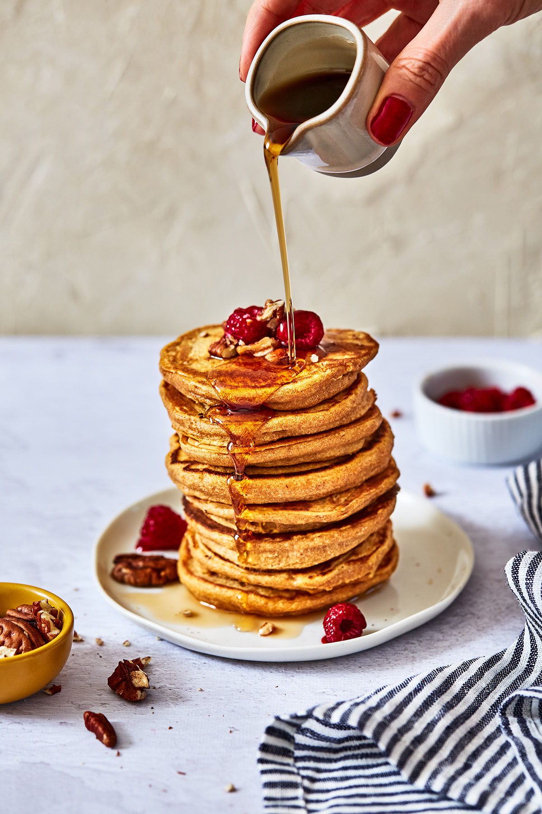

Back to Home
Pancakes

Description
This is a vegan Pancake recipe, delicious for the breakkie !
Ingredients
- 100g flour
- 1 sweet potatoe
- 1 tspoon mapple syrup
- Raspeberries
Steps
- Cook the sweet potatoe and make a mashed. Reserved
- Mixe the flour with the mashed sweet potatoe
- Add milk and mixe up